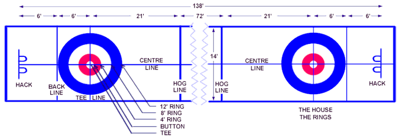

A key driver of curling’s appeal is its relative simplicity. Though the sport may have unfamiliar
terms, and thus seem complicated, it’s actually pretty easy to follow.
A curling match consist of 10 ends, which are equivalent to innings in baseball. In each end,
the four players on both teams alternate throwing stones. The lead throws first, followed by
the second, then the third — or vice-skip — then finally, the skip. Each of the four players on the
competing teams throws two stones per end, for a total of 16 stones. The “skip” is the most important
player on the team. The skip not only throws the last stone in an end — which often determines
the scoring — but also directs the overall strategy.
To execute a shot, a curler pushes a foot off the hack, a piece of rubber akin to a starting block.
The curler slides across the ice, or sheet, to the hog line, and must release the stone before it
touches the line. The stone then heads for the house — the area with four concentric circles on
the other side of the sheet that loosely resembles a dartboard. The house is the scoring area.

How does curling scoring work?
Only one team can score during a curling end. The team with the most stones closest to the curling bullseye — the button — is awarded points.
So if, after 16 stones are thrown, Team A has a stone right on the button, and Team B has a stone a few feet off the button, Team A scores a point.
If Team A had one stone on the button and a stone a few feet off the button, while Team B had a stone on the outer edge of the house, Team A scores two points.
The team that fails to score in an end gets the hammer, or the advantage of throwing the last stone, in the next end. If no stones remain in the house
after an end, no points are awarded: the team with the hammer in a scoreless, or blank, end retains the hammer in the subsequent end.
The team with the most points after 10 ends wins the match.
What’s with the curling brooms?
After a curler throws a stone, his or her teammates will often start sweeping the ice in front the stone as it glides down the ice. Why is sweeping
the activity that requires the most exertion in this particular Olympic sport? Physics! The sweeping warms the ice and reduces friction, allowing
the stone to travel farther and straighter. Depending on the path of the stone and its intended target, a team’s skip will instruct the other curlers to
either start sweeping like a teen whose parents are returning home early to an illicit house party, or to lift their brooms.